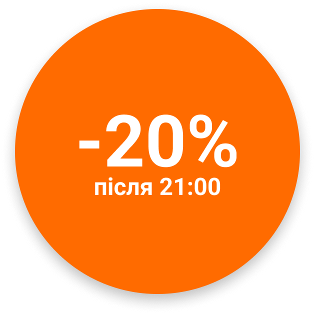

Суші Роли
Знаєш що замовити, натискай на кнопку і ми тобі зателефонуємо. Або переходь до меню
Акції

Про нас
Ми прагнемо до постійної гармонії між збалансованим, здоровим харчуванням та ідеальною комунікацією з нашими клієнтами.